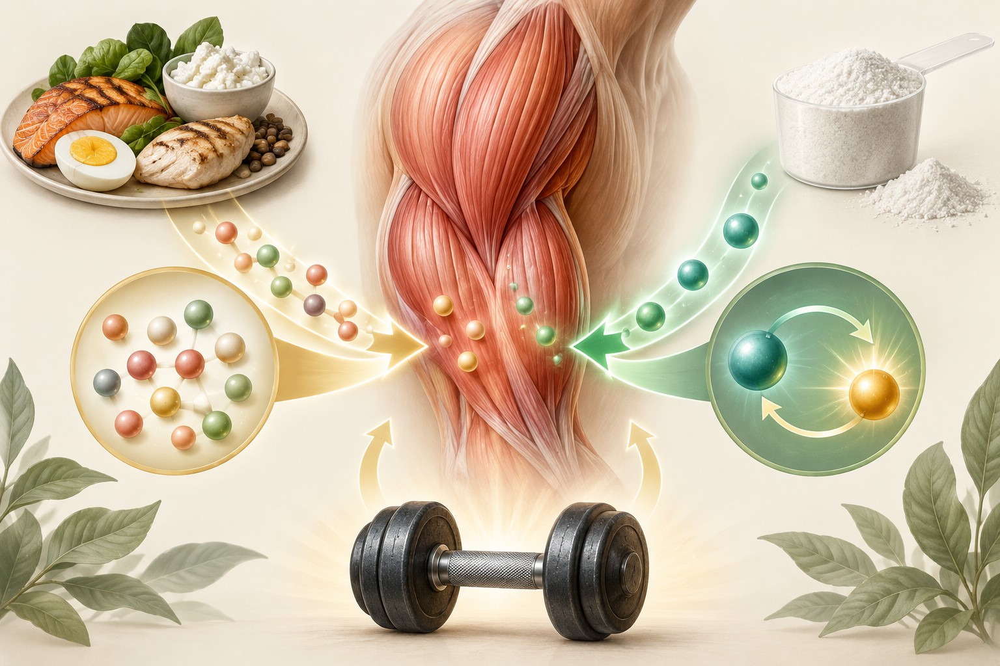
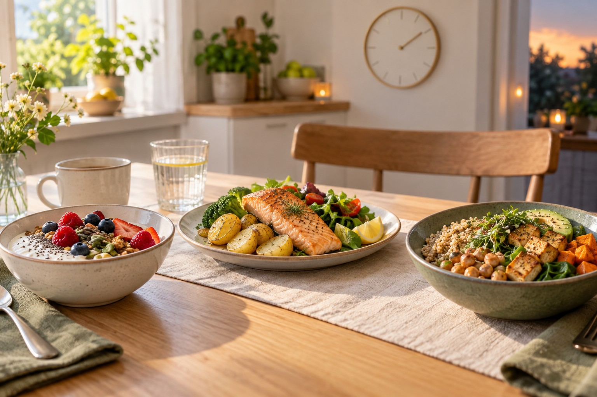
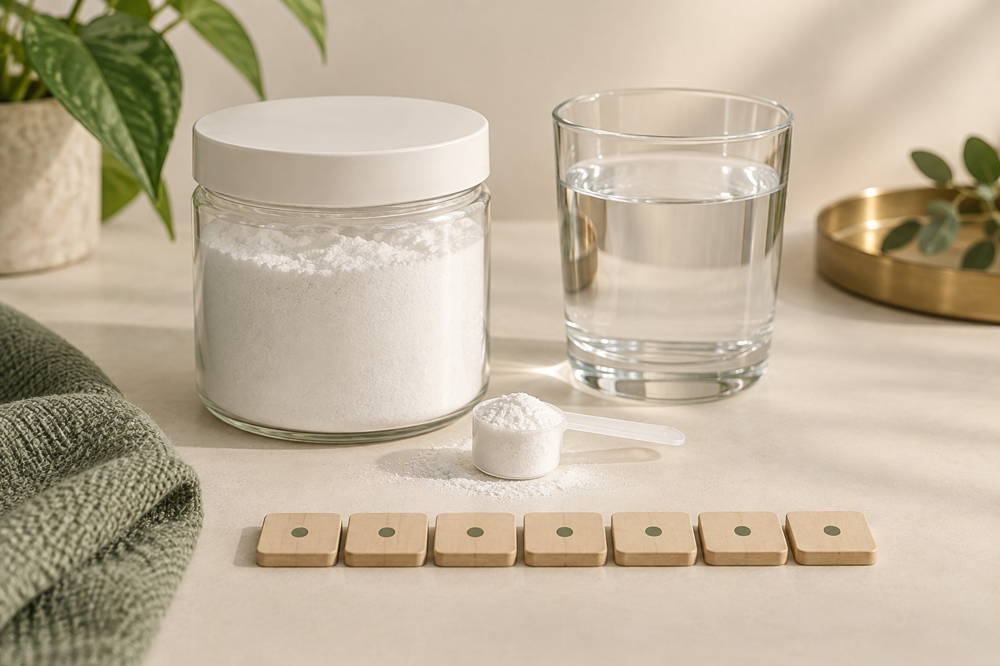
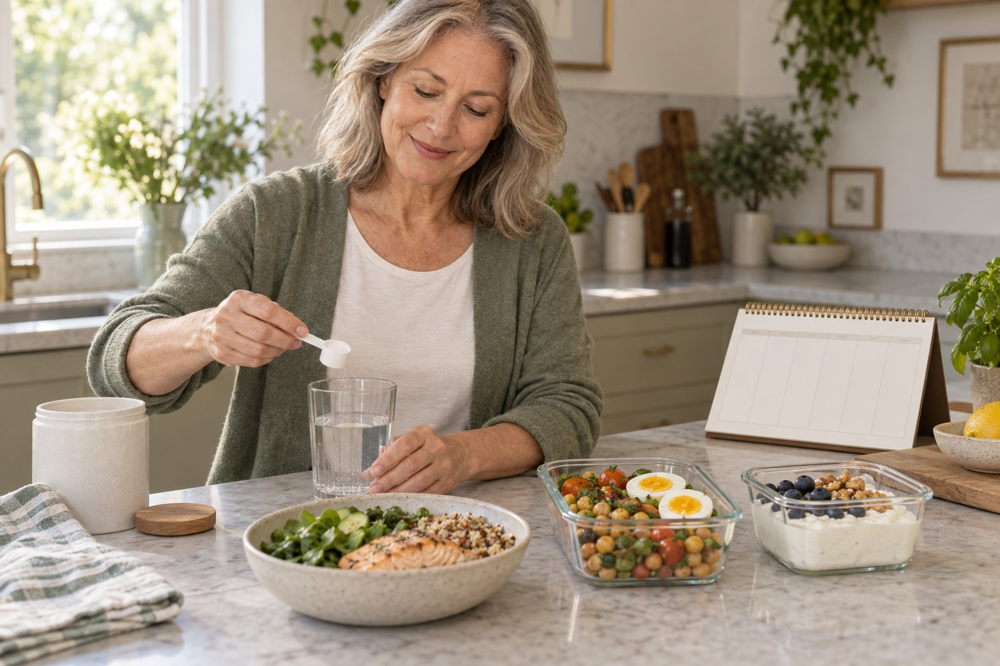
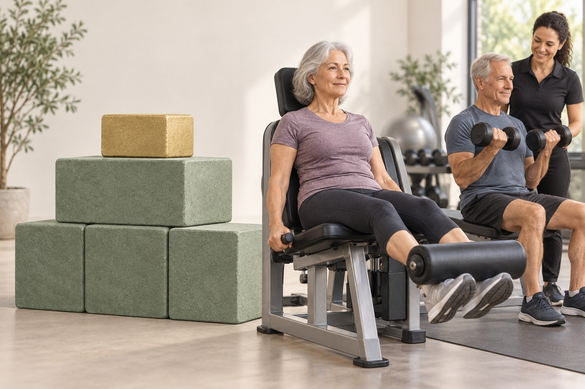

Szybka odpowiedź
Białko i kreatyna wykonują dwa różne zadania. Białko dostarcza aminokwasów, a kreatyna zwiększa pulę fosfokreatyny potrzebną podczas krótkiego, intensywnego wysiłku. Można przyjmować je razem. Jeśli jedzeniem pokrywasz cel białka, odżywka nie jest konieczna; kreatyna pozostaje dodatkiem do regularnego treningu, a nie jego zamiennikiem po pięćdziesiątce.
Kluczowe wnioski
- Białko uzupełnia materiał budulcowy, a kreatyna wspiera szybkie odnawianie energii w pracującym mięśniu.
- Dla zdrowej osoby najprostszy schemat kreatyny to 3–5 g monohydratu codziennie; faza ładowania jest opcjonalna.
- Badania u starszych dorosłych wskazują na małą dodatkową poprawę siły, ale wyniki dla masy mięśniowej i sprawności nie są jednolite.
- Przy chorobie nerek, zaleconym ograniczeniu białka albo nieprawidłowych wynikach plan trzeba ustalić indywidualnie.
Czym różni się działanie białka i kreatyny?
Białko z posiłku lub odżywki jest źródłem aminokwasów używanych do odnowy wielu tkanek, w tym mięśni. Kreatyna nie jest białkiem: zwiększa zasoby kreatyny i fosfokreatyny, dzięki którym komórka szybciej odtwarza ATP podczas serii ćwiczeń. Jedno nie może więc zastąpić drugiego.

Nie ma też szczególnej reakcji, która wymagałaby połączenia obu proszków w jednym shakerze. Możesz je wypić razem dla wygody albo przyjąć osobno. O wyniku decydują przede wszystkim tygodnie progresywnego treningu, a nie kolejność suplementów w ciągu kilku minut. Podstawy programu znajdziesz w Centrum Treningu Siłowego.
Ile białka potrzebuje osoba po 50-tce?
Pięćdziesiąte urodziny nie uruchamiają jednej obowiązkowej dawki. Zalecenia ESPEN dla zdrowych starszych osób najczęściej wskazują 1,0–1,2 g białka na kilogram masy ciała dziennie. Dla osoby ważącej 70 kg daje to 70–84 g. Choroba, niedożywienie, otyłość i funkcja nerek mogą zmienić sposób obliczenia celu.

W chorobie lub podczas dochodzenia do sprawności eksperci często rozważają 1,2–1,5 g/kg, ale nie jest to uniwersalna recepta. Przy przewlekłej chorobie nerek albo zaleconym ograniczeniu białka decyzja należy do lekarza i dietetyka. Także przy znacznej nadwadze proste mnożenie przez aktualną masę może zawyżać wynik.
Zacznij od zwykłego dnia jedzenia. Policz białko z nabiału, jaj, ryb, mięsa, tofu i strączków, a odżywką uzupełnij tylko brakującą część. Nie daje ona mięśniom lepszego aminokwasu tylko dlatego, że jest w proszku. Do własnych obliczeń możesz użyć kalkulatora białka.
Jak dawkować monohydrat kreatyny?
Dla zdrowej osoby prosty, dobrze zbadany wariant to 3–5 g monohydratu kreatyny każdego dnia. Nie trzeba dopasowywać dawki do dnia treningowego ani kupować „zaawansowanej” formy. Monohydrat ma najwięcej danych dotyczących skuteczności i bezpieczeństwa, a wyższa cena estru, buforowanej kreatyny czy mieszanki nie dowodzi lepszego efektu.

Ładowanie około 20 g dziennie, podzielone na cztery porcje przez 5–7 dni, szybciej nasyca mięśnie, lecz nie jest konieczne. Bez ładowania podobne nasycenie pojawia się wolniej, zwykle po kilku tygodniach. Duże porcje częściej wywołują dyskomfort jelitowy, dlatego spokojny wariant 3–5 g jest dla wielu osób wygodniejszy.
Na początku masa ciała może wzrosnąć przez większą ilość wody w komórkach mięśniowych. To nie jest automatycznie przyrost tłuszczu ani dowód zbudowania nowej tkanki mięśniowej. Pełne omówienie form, dawkowania i mitów zawiera poradnik kreatyny po 50-tce.
Jak połączyć białko i kreatynę w zwykłym dniu?
Najłatwiejszy plan nie wymaga zegarka. Ustal dobowy cel białka, rozłóż produkty białkowe między główne posiłki, a 3–5 g kreatyny przypisz do czynności, którą wykonujesz codziennie. Może to być śniadanie, obiad albo koktajl po treningu. W dzień bez ćwiczeń kreatynę przyjmujesz tak samo.

Przykład dla osoby ważącej 70 kg i celu 70–84 g: trzy posiłki po około 25 g dają 75 g. Jeśli kolacja zawiera tylko pieczywo i warzywa, odżywka może wypełnić lukę; jeśli są w niej twaróg, tofu, ryba lub strączki, koktajl może być zbędny. To przykład rachunku, a nie jadłospis dla każdej osoby.
| Pytanie | Białko | Kreatyna monohydrat |
|---|---|---|
| Po co? | Pokrycie zapotrzebowania na aminokwasy | Większa pula fosfokreatyny w mięśniach |
| Ile? | Cel zależny od masy, diety i zdrowia | Zwykle 3–5 g dziennie u zdrowej osoby |
| Kiedy? | Liczy się suma dnia i regularne posiłki | Dowolna wygodna pora, codziennie |
| Czy suplement jest konieczny? | Nie, jeśli cel pokrywa jedzenie | Nie, ale suplementacja zwiększa zasoby mięśniowe |
Co pokazują badania u starszych dorosłych?
Wynik jest obiecujący, ale skromniejszy niż reklamy. Metaanaliza z 2026 roku objęła 11 randomizowanych badań osób od 60. roku życia. Kreatyna dodana do treningu oporowego dawała małą dodatkową poprawę siły, ocenioną jako dowód umiarkowanej pewności. Nie wykazano natomiast jasnej dodatkowej korzyści dla masy mięśniowej ani sprawności.

Metaanaliza z 2025 roku, oparta na ośmiu badaniach i 482 uczestnikach, znalazła niewielką poprawę siły nóg oraz beztłuszczowej masy, ale bez istotnej poprawy siły górnej części ciała. Różnice między tymi podsumowaniami wynikają z doboru badań, metod i punktów końcowych. Uczciwy wniosek brzmi: dodatkowy efekt jest możliwy, lecz nie obejmuje każdego wyniku i każdej osoby.
Wspólny mianownik jest mocniejszy: trening oporowy poprawia siłę i hipertrofię względem braku ćwiczeń w wielu konfiguracjach. Kreatyna może dołożyć niewielką korzyść, ale nie naprawi nieregularnego programu, zbyt małej ilości jedzenia ani braku snu. Takie błędy w ocenie suplementów omawia przewodnik suplementacji.
Kiedy trzeba zachować ostrożność?
Najpierw skonsultuj plan, jeśli masz przewlekłą chorobę nerek, nieprawidłowy eGFR, białkomocz, zalecone ograniczenie białka lub płynów albo niewyjaśnione odchylenia w badaniach. Dane o typowych dawkach u zdrowych osób nie są automatycznie zgodą dla osoby z chorobą nerek. Lekarz musi znać dawkę, czas stosowania i pozostałe preparaty.
Nowe metaanalizy badań randomizowanych potwierdzają ważny szczegół: kreatyna może nieznacznie zwiększyć kreatyninę we krwi i przez to obniżyć eGFR obliczony z kreatyniny. W analizach wykorzystujących inne wskaźniki lub pomiar filtracji nie obserwowano równoległego dowodu uszkodzenia nerek. Nie oznacza to, że każdy nieprawidłowy wynik można zrzucić na suplement.
Przed pobraniem krwi powiedz, że stosujesz kreatynę, i nie odstawiaj jej samodzielnie tylko po to, by „upiększyć” wynik. Decyzję o powtórzeniu badania, przerwie albo użyciu innego markera podejmuje osoba prowadząca. Wybieraj produkt jednoskładnikowy z jawną porcją. Więcej o kontroli parametrów znajdziesz w artykule o badaniach krwi.
Najczęściej zadawane pytania
Czy można mieszać kreatynę z odżywką białkową?
Tak. Można przyjąć je w jednym koktajlu albo osobno. Wspólne wypicie jest wygodne, lecz nie daje potwierdzonej przewagi nad dwiema osobnymi porcjami.
Ile kreatyny po 50-tce?
Dla zdrowej osoby najczęściej stosuje się 3–5 g monohydratu dziennie. Choroba nerek lub nieprawidłowe wyniki wymagają indywidualnej oceny przed rozpoczęciem.
Czy kreatynę bierze się tylko w dni treningowe?
Nie. Codzienne stosowanie utrzymuje zasoby mięśniowe; pora dnia ma mniejsze znaczenie niż regularność.
Czy kreatyna uszkadza nerki?
W badaniach typowych dawek u zdrowych osób nie wykazano pogorszenia mierzonej filtracji. Kreatyna może jednak podnieść kreatyninę i zmienić eGFR wyliczony z tego markera, dlatego choroba nerek oraz nieprawidłowe wyniki wymagają konsultacji.
Dawkę białka, najlepsze źródła, odżywki i strategie ochrony mięśni zebraliśmy w Centrum Białka po 50-tce.
Źródła
- ESPEN practical guideline: Clinical nutrition and hydration in geriatrics (2022)
- ESPEN Expert Group: protein intake and exercise for optimal muscle function with aging
- Creatine plus resistance training in adults aged 60+: three-level meta-analysis (2026)
- Creatine plus resistance training in older adults: systematic review and meta-analysis (2025)
- Creatine supplementation and kidney function: meta-analysis of randomized trials (2026)
- ISSN position stand: safety and efficacy of creatine supplementation
- Resistance training prescription: systematic review and network meta-analysis
Uwaga: Artykuł ma charakter informacyjny i edukacyjny. Nie zastępuje konsultacji, diagnozy ani indywidualnego leczenia.